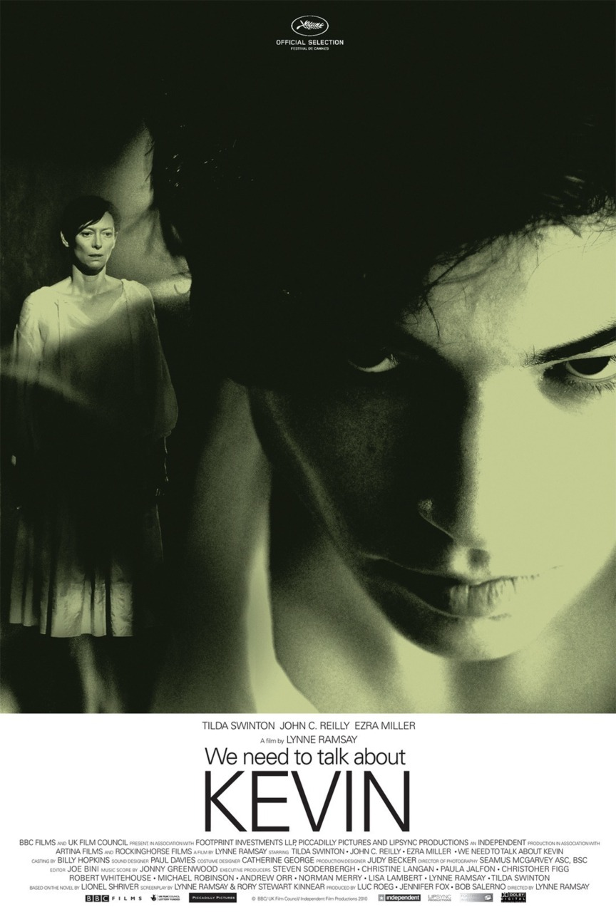
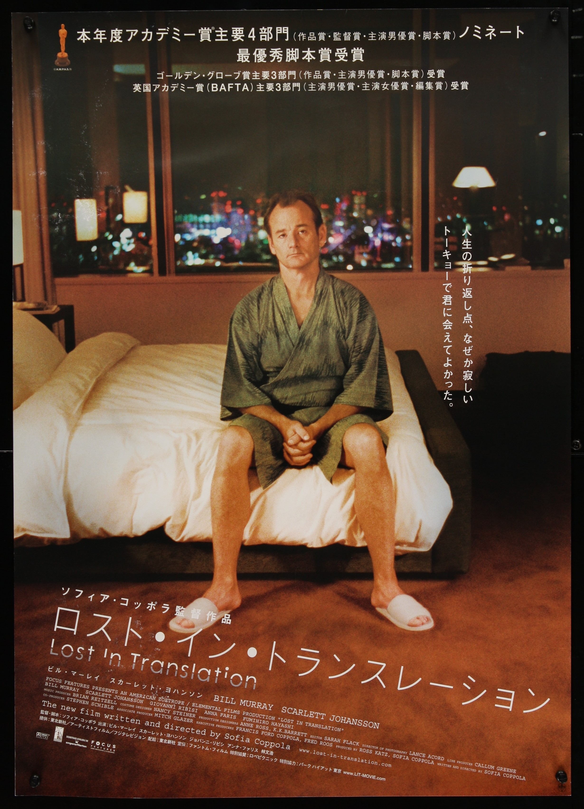

Noah Leal
Programmer?
When we look back from the sculpture of the Middle Ages to antiquity, and from there to the beginnings of time, does it not seem as if the human soul has always longed, and particularly at turning points both light and distressing, for an art that gives more than word and picture, more than parables and appearance; for the simple realization of its desires and or anxieties in things? The last great age for sculpture was the Renaissance. It was a time when life was undergoing renewal. When the mysterious face of mankind was discovered anew. A time when great gestures were possible.
A Few of My Favorite Movies
|  |
We Need to Talk About KevinEva Khatchadourian (Tilda Swinton) is a travel writer/publisher who gives up her beloved freedom and bohemian lifestyle to have a child with her husband, Franklin (John C. Reilly). Pregnancy does not seem to agree with Eva, but what's worse, when she does give birth to a baby boy named Kevin, she can't seem to bond with him. When Kevin grows from a fussy, demanding toddler (Rocky Duer) into a sociopathic teen (Ezra Miller), Eva is forced to deal with the aftermath of her son's horrific act. |
|  |
Lost in TranslationA lonely, aging movie star named Bob Harris (Bill Murray) and a conflicted newlywed, Charlotte (Scarlett Johansson), meet in Tokyo. Bob is there to film a Japanese whiskey commercial; Charlotte is accompanying her celebrity-photographer husband. Strangers in a foreign land, the two find escape, distraction and understanding amidst the bright Tokyo lights after a chance meeting in the quiet lull of the hotel bar. They form a bond that is as unlikely as it is heartfelt and meaningful. |

|
Io Sono L'AmoreAt a dinner -- during which her husband, Tancredi (Pippo Delbono), learns that he and his son Edoardo Recchi Jr. (Flavio Parenti) are about to assume control of the Edoardo Recchi Sr.'s (Gabriele Ferzetti) lucrative business -- Emma (Tilda Swinton) meets a chef named Antonio (Edoardo Gabbriellini). Antonio and Emma soon find themselves in bed together. With the family already divided over the elder Recchi's unusual plans, Emma's affair is the wild card that might divide the family for good. |